전기철도기사 (2013-06-02 기출문제)
1과목: 전기철도공학
1. 전차선의 편위를 결정하는 요소로 거리가 가장 먼 것은?
- 지지물의 경사에 의한 전차선의 편위
- 풍압에 의한 전차선의 편위
- 대기압에 의한 전차선의 편위
- 곡선로에서 전차선의 편위
(정답률: 알수없음)

2. 전차선과 조가선을 일괄 자동장력조정하는 경우 전차선의 허용장력을 1500[kgf]라 하면 이 전차선의 표준장력[kgf]은?
- 1200
- 1275
- 1350
- 1425
(정답률: 알수없음)
3. 직류 강체전차선로에서 T-Bar에 전차선이 잘 밀착하도록 하여 연속적으로 고정시키는 연결금구는?
- 절연매립전
- 롱이어
- 이행장치
- 익스팬션
(정답률: 알수없음)
4. 교류 강체전차선로(R-Bar 방식)에서 단권변일기방식의 급전계통 보호선은 어떤 보호방식을 사용하고 있는가?
- 절연 보호방식
- 비절연 보호방식
- 흡상선 보호방식
- 임피던스본드 보호방식
(정답률: 알수없음)
5. 차체 경사를 레일면에서 585mm 정을 중심으로 해서 좌우 610mm의 수평점에서 상하 최대 32mm라 할 때 차체 동요에 의한 팬터그래프의 경사각은 약 몇 [ ° ]인가?
- 1°
- 2°
- 3°
- 5°
(정답률: 알수없음)
6. 1급전 구간에 2이상의 급전점을 가진 급전방식은?
- 연장급전
- 직렬급전
- 병렬급전
- 직ㆍ병렬급전
(정답률: 알수없음)
7. 고속전차선로에서 흐름방지장치는 터널입구에서 350[m] 정도 되는 지점에 설치하고, 인류장치는 터널외부에 설치하는 경우로 맞는 것은?
- 터널길이가 1500[m]를 초과할 경우
- 터널길이가 1⑤0[m] 초과, 1500[m] 이하일 경우
- 하나 또는 여러 개의 연속된 터널길이가 각각 700[m] 이하일 경우
- 터널길이가 700[m] 초과, 1⑤0[m] 이하일 경우
(정답률: 알수없음)
8. 교류 R-bar방식 전차선로에서 가공전차선로의 인류 장치와 같은 용도로 사용하며, 컨덕트 레일로 들어오는 전차선의 작용을 흡수하는 장치는?
- 고정점
- 한계점
- 제한점
- 경계점
(정답률: 알수없음)
9. 전차선 110mm2 접촉점에 흐르는 아크전류를 I(A), 지속시간을 t(sec) 라 할 때 전차선이 단선되는 시점을 나타내는 식은?
- Iㆍt ≥ 750
- Iㆍt ≥ 850
- Iㆍt ≥ 950
- Iㆍt ≥ 1⑤0
(정답률: 알수없음)
10. 강체 조가방식 중 T-bar방식에 사용하는 애자의 규격으로 맞는 것은?
- 95[mm]
- 1⑤[mm]
- 250[mm]
- 300[mm]
(정답률: 알수없음)
11. 정류기용 변압기의 직류권선전압올 1200(V)로 하였을 때 3상 전파정류방식에서 무부하시 발생하는 직류전압[V]은?
- 952
- 1020
- 1620
- 1820
(정답률: 알수없음)
12. 고속전차선로의 급전선 분기장치 종류가 아닌 것은?
- 암(Arm)식
- 동봉 스팬선식
- 가동브래키트식
- 분기식
(정답률: 알수없음)
13. 전차선 110mm2의 허용장력을 1075kgf로 할 때 잔존단면적[mm2]은 약 몇 [mm2]인가? (단, 안전율은 2.2, 전차선의 파괴강도를 35kcf/mm2 로 한다.)
- 44.32
- 51.78
- 57.42
- 67.57
(정답률: 알수없음)
14. 바람의 영향이 없고, 직선 및 곡선반지름이 1600m 이상인 가동브래킷 구간에서 지지점 경간이 60m 일 때 표준가고는 약 몇 [mm] 인가? (단, 조가선은 St 90mm2 (0.697kg/m), 전차선은 Cu 110mm2 (0.998kg/m), 드롭퍼의 전차선 단위길이당 환산중량은 0.1kg/m 이고, 드롭퍼의 최소길이는 0.15m, 표준장력은 1000kgf 이다.)
- 550
- 710
- 958
- 1000
(정답률: 알수없음)
15. 단상 100[KVA] 2차전압 210[V], 임피던스 2.8[%]일 때 단락전류의 크기는 약 몇 [A]인가?
- 3300.5
- 6370.6
- 17006.8
- 25480.5
(정답률: 알수없음)
16. 강체가선방식(R-bar)의 최대 이도 f 를 구하는 식은? (단, ga+ge : R-bar와 전차선의 중량[N/m], a : R-bar의 지지 경간 [m], Ea : 탄성계수[N/m2], Iy-y : y-y축의 관성모멘트 [cm2] 이다.)
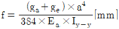
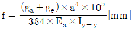
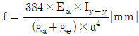
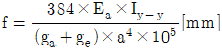
(정답률: 알수없음)
17. 하중이 0.5kg 인 1m 의 전차선을 지지점이 수평인 경간 50m 에 가설하여 이도를 0.2m 로 하려면, 전선의 표준장력은 약 몇 [kgf] 인가?
- 681.3
- 724.5
- 781.3
- 794.5
(정답률: 알수없음)
18. 심플커티너리 가선방식에서 팬터그래프의 공진속도[km/h]는 약 몇 [km/h]인가? (단, 경간(S): 60[m]. 스프링계수(K'): 2000[N/m], 스프링계수 부등율(ε): 0.4, 등가질량(m): 80[kg]이다.)
- 180
- 155
- 165
- 175
(정답률: 알수없음)
19. 고속전차선로 4경간의 에어섹숀에서 주축전주(2e 및 2l) 쌍브래킷 가고의 조합으로 맞는 것은?
- 1.8[m]와 1.4[m]
- 2.0[m]와 1.3[m]
- 2.2[m]와 1.2[m]
- 2.4[m]와 1.0[m]
(정답률: 알수없음)
20. 선로가 곡선인 개소에서 차량이 선로외측으로 넘어지는 것을 막고 승차감을 좋게 하기 위하여 외축 레일을 내측 레일보다 높게 부설하는데 이때의 높이차를 무엇이라 하는가?
- 슬랙(slack)
- 완화곡선
- 캔트(cant)
- 구배
(정답률: 알수없음)
2과목: 전기철도 구조물공학
21. 전기철도구조물의 강도를 계산하기 위한 설계조건에 해당되지 않는 것은?
- 선로조건(곡선반지름)
- 지지주가 설치되어 있는 위치의 기상조건
- 해당선로의 급전방식과 가선방식
- 전압강하와 전선의 온도상승
(정답률: 알수없음)
22. 그림과 같은 힘에 대하여 ○ 점에 대한 모멘트 M[tㆍcm]는?
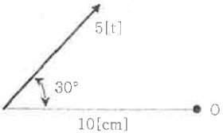
- 15
- 20
- 25
- 30
(정답률: 알수없음)
23. 지표면에서 높이가 11[m]인 단독지지주에 28[kgf/m]의 수평분포하중이 작용하는 경우 4[m] 지점에서의 모멘트 [kgfㆍm]는?
- 686
- 696
- 787
- 797
(정답률: 알수없음)
24. 다음 중 지선의 종류가 아닌 것은?
- V형 지선
- 2단 지선
- 궁형 지선
- A형 지선
(정답률: 알수없음)
25. 다음 철 구조물 중 문형 고정빔 (beam)이 아닌 것은?
- 크로스빔
- 평면빔
- V형빔
- 사각빔
(정답률: 알수없음)
26. 철주다리의 구조에서 주체를 기초부와 상부에 분할하여 기초부 완료후 자제부분에 상부주체를 볼트로 체결해서 접속하는 방식은?
- 근계매입
- 직매입
- 앵커볼트매입
- 핀구조
(정답률: 알수없음)
27. 프리텐션 콘크리트주에 11-30-N6500 으로 표기되어 있다. 여기에서 6500은 무엇을 의미하는기?
- 길이
- 지름
- 설계굽힘 모멘트
- 압축력
(정답률: 알수없음)
28. 그림과 같이 반지름(r) 4[cm]인 반원의 도심 위치 약 몇 [cm]인가?
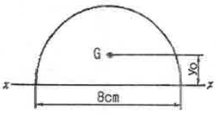
- 1.4cm
- 1.7cm
- 1.9cm
- 2.1cm
(정답률: 알수없음)
29. 그림과 같은 단순보의 C점에서 모멘트 [tㆍm]는?
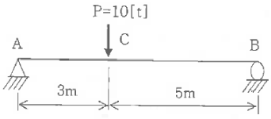
- 3.75
- 6.25
- 18.75
- 31.25
(정답률: 알수없음)
30. 태풍의 10분간 평균풍속으로 30[m/s]가 관측되었다. 순간풍속의 관측값이 없을 경우 이 태풍의 5초간 최대순간 풍속[m/s]은 얼마로 추정하는가?
- 30.5
- 36.2
- 40.5
- 45.5
(정답률: 알수없음)
31. 지름이 2[cm]인 환강봉을 상온보다 10[°C] 상승시켜 양단을 벽에 고정시켰을 때 봉의 단면에서 벽에 영향을 주는 힘[kgf]은 약 몇 [kgf]인가? (단, 탄성계수 E=2.1×105[kg/cm2], 선팽창계수 =1×10-5[1/°C]이다.)
- 596.7
- 5965
- 659.7
- 6597
(정답률: 알수없음)
32. 단독지지주에서 지지점의 높이가 L[m]인 전선에 수평집중하중 P[kgf]가 작용하는 경우 h점에서의 전단력[kgt]은? (단, L＞h 이다.)
- P×L
- P(L-h)
- P
- (1/2)P(L-h)
(정답률: 알수없음)
33. 가공전차선로에서 전선의 안전율(Fs)은?
- Fs= 인장하중/탄성계수
- Fs= 인장하중/최대사용장력
- Fs= √(인장하중/최대사용장력)
- Fs= 사용장력/인장하중
(정답률: 알수없음)
34. 어떤 봉(rod)이 온도변화에 의하여 신장 할 경우의 신장량(δ) 계산식으로 맞는 것은? (단, α : 선팽창계수, L : 길이, △T : 상승온도)
- δ=αL/△T
- δ=αL△T
- δ=α△T/L
- δ=L△T/α
(정답률: 알수없음)
35. 그림과 같은 원형단면의 X축에 대한 단면2차모멘트[cm3]는?
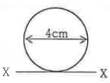
- 16π
- 20π
- 40π
- 50π
(정답률: 알수없음)
36. 가공전차선로에 사용하는 단지선의 강도 계산시 지선용 재료의 항장력 P[kgf] 를 나타내는 식은? (단, T는 수평장력 [kgf]. θ는 지선이 전주와 이루는 각도이다.)
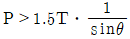
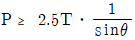
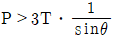
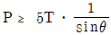
(정답률: 알수없음)
37. 1차원 구조물 중 뼈대 구조인 것은?
- 봉(rod)
- 기둥(column)
- 보(beam)
- 트러스(truss)
(정답률: 알수없음)
38. 힘을 표시하는 3요소로 적정한 것은?
- 수평력, 수직력, 모멘트
- 크기, 방향, 작용점
- 크기, 방향, 모멘트
- 크기, 전단력, 모멘트
(정답률: 알수없음)
39. 가공전차선로에 설치된 단독전철주의 지면으로부터 높이는 11[m]이다. 이 전주에 수평분포하중 32[kgf/m]가 작용하는 경우 지면과의 경계점 모멘트[kgfㆍm]는?
- 1846
- 1896
- 1936
- 1986
(정답률: 알수없음)
40. 허용인장응력이 1800kgf/cm2 이고, 인장력이 4500kgf 인 원형강의 소요 단면적[cm2]은?
- 2
- 2.5
- 3
- 3.5
(정답률: 알수없음)
3과목: 전기자기학
41. 유전체에 대한 경계조건에 설명이 옳지 않은 것은?
- 표면전하 밀도란 구속전하의 표면밀도를 말하는 것이다.
- 완전 유전체 내에서는 자유전하는 존재하지 않는다.
- 경계면에 외부전하가 있으면, 유전체의 내부와 외부의 전하는 평형 되지 않는다.
- 특수한 경우를 제외하고 경계면에서 표면전하 밀도는 영(zero)이다.
(정답률: 알수없음)
42. 무한히 넓은 도체 평면판에 면밀도 σ[C/m2]의 전하가 분포되어 있는 경우 전력선은 면(面)에 수직으로 나와 평행하게 발산한다. 이 평면의 전계의 세기는 몇 [V/m]인가?
- σ/ε0
- σ/2ε0
- σ/2πε0
- σ/4πε0
(정답률: 알수없음)
43. 그림과 같이 정전용량이 Co[F]가 되는 평행판 공기콘덴서에 판면적의 1/2 되는 공간에 비유전률이 εs인 유전체를 채웠을 때 정전용량은 몇 [F] 인가?
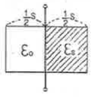
- (1/2)(1+εs)C0
- (1+εs)C0
- (2/3)(1+εs)C0
- C0
(정답률: 알수없음)
44. 공극을 가진 환상솔레노이드에서 총 권수 N회, 철심의 투자율 μ[H/m]. 단면적 S[m2]. 길이 ℓ[m]이고 공극의 길이가 δ[m]일 때 공극부에 자속밀도 B[Wb/m2]을 얻기 위해서는 몇 [A]의 전류를 흘려야 하는가?
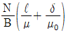
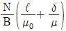
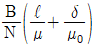
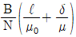
(정답률: 알수없음)
45. 전하 q[C]이 공기 중의 자계 H[AT/m]에 수직 방향으로 v[m/s] 속도로 돌입하였을 때 받는 힘은 몇 [N]인가?
- qH/μ0v
- (1/μ0)qvH
- qvH
- μ0qvH
(정답률: 알수없음)
46. 반지름 a[m]이고, N=1회의 원형코일에 I[A]의 전류가 흐를 때 그 코일의 중심점에서의 자계의 세기 [AT/m]는?
- I / 2πa
- I / 4πa
- I / 2a
- I / 4a
(정답률: 알수없음)
47. 무한평면도체에서 d[m]의 거리에 있는 반경 a[m]의 구도체와 평면도체 사이의 정전용량은 몇 [F] 인가? (단, a《d 이다.)
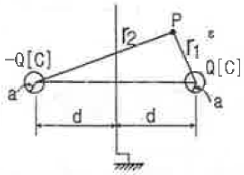
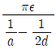
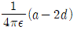
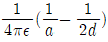
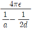
(정답률: 알수없음)
48. 전선의 체적을 동일하게 유지하면서 2배의 길이로 늘였을 때 저항은 어떻게 되는가?
- 1/2로 줄어든다.
- 동일하다.
- 2배로 증가한다.
- 4배로 증가한다.
(정답률: 알수없음)
49. 평면 도체로부터 수직거리 a[m]인 곳에 점전하 Q[C]가 있다. Q 와 평면도체 사이에 작용하는 힘은 몇 [N]인가? (단, 평면도체 오른편을 유전율 ε의 공간이라 한다.)
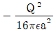
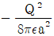
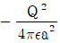
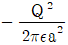
(정답률: 알수없음)
50. 정전류가 흐르고 있는 무한 직선도체로부터 수직으로 0.1[m]만큼 떨어진 점의 자계의 크기가 100[A/m]이면 0.4[m]만큼 떨어진 점의 자계의 크기[A/m]는?
- 10
- 25
- 50
- 100
(정답률: 알수없음)
51. 비투자율 μs=800, 원형 단면적이 S=10[cm2], 평균 자로 길이 l=8π×10-2[m]의 환상 철심에 600회의 코일을 감고 이것에 1[A]의 전류를 흘리면 내부의 자속은 몇 [Wb]인가?
- 1.2×10-3
- 1.2×10-5
- 2.4×10-3
- 2.4×10-5
(정답률: 알수없음)
52. 자계의 벡터퍼텐셜을 A [Wb/m]라 할 때 도체 주위에서 자계 B [Wb/m2]가 시간적으로 변화하면 도체에 생기는 전계의 세기 E [V/m]은?
- E = -(∂A/∂t)
- rotE = -(∂A/∂t)
- E = rotA
- rotE = ∂B/∂t
(정답률: 알수없음)
53. 그림과 같이 권수 50회이고 전류 1[mA]가 흐르고 있는 직사각형 코일이 0.1[Wb/m2]의 평등자계 내에 자계와 30° 로 기울어 놓았을 때 이 코일의 회전력 (Nㆍm]은? (단, a=10[cm], b=15[cm]이다.)
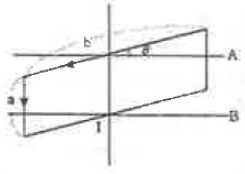
- 3.74×10-5
- 6.49×10-5
- 7.48×10-5
- 11.22×10-5
(정답률: 알수없음)
54. 변위 전류와 가장 관계가 깊은 것은?
- 반도체
- 유전체
- 자성체
- 도체
(정답률: 알수없음)
55. 면적이 S[m2]이고 극간의 거리가 d[m]인 평행판 콘덴서에 비유전률 εs 의 유전체를 채울 때 정전용량은 몇 [F] 인가? (단, 진공의 유전률은 ε0 이다.)
- 2ε0εsS/d
- ε0εsS/πd
- ε0εsS/d
- 2πε0εsS/d
(정답률: 알수없음)
56. 자화의 세기로 정의 할 수 있는 것은?
- 단위면적당 자위밀도
- 단위체적당 자기모멘트
- 자력선 밀도
- 자화선 밀도
(정답률: 알수없음)
57. 자화율(magnetic susceptibility) χ는 상자성체에서 일반적으로 어떤 값을 갖는가?
- χ = 0
- χ = 1
- χ ＜ 0
- χ ＞ 0
(정답률: 알수없음)
58. 그림과 같이 전류가 흐르는 반원형 도선이 평면 z=0 상에 놓여 있다. 이 도선이 자속밀도 B=0.8ax-0.7ay+az [Wb/m2]인 균일자계 내에 놓여 있을 때 도선의 직선 부분에 작용하는 힘은 몇 [N] 인가?
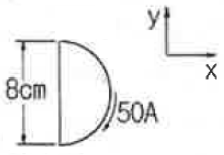
- 4ax+3.2az
- 4ax-3.2az
- 5ax-3.5az
- -5ax+3.5az
(정답률: 알수없음)
59. 균일하게 원형단면을 흐르는 전류 I[A]에 의한, 반지름 a[m], 길이 ℓ[m], 비투자율 μs 인 원통도체의 내부 인덕턴스는 몇 [H] 인가?
- (1/2)×10-7μsℓ
- 10-7μsℓ
- 2×10-7μsℓ
- (1/2a)×10-7μsℓ
(정답률: 알수없음)
60. 압전기 현상에서 분극이 응력과 같은 방향으로 발생하는 현상을 무슨 효과라 하는가?
- 종효과
- 횡효과
- 역효과
- 간접효과
(정답률: 알수없음)
4과목: 전력공학
61. 다음 중 전력원선도에서알 수 없는 것은?
- 전력
- 조상기 용량
- 손실
- 코로나 손실
(정답률: 알수없음)
62. 표피효과에 대한 설명으로 옳은 것은?
- 표피효과는 주파수에 비례한다.
- 표피효과는 전선의 단면적에 반비례한다.
- 표피효과는 전선의 비투자율에 반비례한다.
- 표피효과는 전선의 도전률에 반비례한다.
(정답률: 알수없음)
63. 배전선로의 주상변압기에서 고압측-저압측에 주로 사용되는 보호장치의 조합으로 적합한 것은?
- 고압측: 프라이머리 컷아웃 스위치, 저압측: 캐치홀더
- 고압축: 캐치홀더, 저압측: 프라이머리 컷아웃 스위치
- 고압측: 리클로저, 저압측: 라인퓨즈
- 고압측: 라인퓨즈, 저압측: 리클로저
(정답률: 알수없음)
64. 다음중모선보호용 계전기로 사용하면 가장 유리한 것은?
- 재폐로계전기
- 과전류계전기
- 역상계전기
- 거리계전기
(정답률: 알수없음)
65. 저압 뱅킹 배선방식에서 캐스케이딩 이란 무엇인가?
- 변압기의 전압 배분을 자동으로 하는 것
- 수전단 전압이 송전단 전압보다 높아지는 현상
- 저압선에 고장이 생기면 건전한 변압기의 일부 또는 전부가 차단되는 현상
- 전압 동요가 일어나면 연쇄적으로 파동치는 현상
(정답률: 알수없음)
66. 원자로의 감속재가 구비하여야 할 사항으로 적합하지 않은 것은?
- 원자량이 큰 원소일 것
- 중성자의 흡수 단면적이 적을 것
- 중성자와의 충돌 확률이 높을 것
- 감속비가 클 것
(정답률: 알수없음)
67. 부하역률이 0.6인 경우, 전력용 콘덴서를 병렬로 접속하여 합성역률을 0.9로 개선하면 전원측 선로의 전력손실은 처음 것의 약 몇 %로 감소되는가?
- 38.5
- 44.4
- 56.6
- 62.8
(정답률: 알수없음)
68. 변압기 보호용 비율차동계전기를 사용하여 △-Y 결선의 변압기를 보호하려고 한다. 이 때 변압기 1. 2차측에 설치하는 변류기의 결선 방식은? (단, 위상 보정기능이 없는 경우이다.)
- △-△
- △-Y
- Y-△
- Y-Y
(정답률: 알수없음)
69. 송전계통의 안정도 향상 대책이 아닌 것은?
- 계통의 직렬 리액턴스를 증가시킨다.
- 전압 변동을 적게 한다.
- 고장시간, 고장전류를 적게 한다.
- 고속도 재폐로 방식을 채용한다.
(정답률: 알수없음)
70. 송전계통의 한 부분이 그림에서와 같이 3상변압기로 1차측은 △로, 2차측은 Y로 중성점이 접지되어 있을 경우, 1차측에 흐르는 영상전류는?
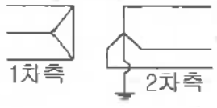
- 1차측 변압기 내부와 1차측 선로에서 반드시 0 이다.
- 1차측 선로에서 ∞ 이다.
- 1차측 변압기 내부에서는 반드시 0 이다.
- 1차측 선로에서 반드시 0 이다.
(정답률: 알수없음)
71. 송배전선로의 고장전류 계산에서 영상 임피던스가 필요한 경우는?
- 3상 단락계산
- 선간 단락 계산
- 1선 지락 계산
- 3선 단선 계산
(정답률: 알수없음)
72. 송전선의 전압변동률을 나타내는 식
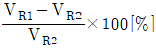
에서 VR1은 무엇인가?- 부하시 수전단 전압
- 무부하시 수전단 전압
- 부하시 송전단 전압
- 무부하시 송전단 전압
(정답률: 알수없음)
73. 공기차단기(ABB)의 공기 압력은 일반적으로 몇 [kg/cm2] 정도 되는가?
- 5~10
- 15~30
- 30~45
- 45~55
(정답률: 알수없음)
74. 부하의 불평형으로 인하여 발생하는 각 상별 불평형 전압을 평형되게 하고 선로손실을 경감시킬 목적으로 밸런서가 사용된다. 다음 중 이 밸런서의 설치가 가장 필요한 배전 방식은?
- 단상 2선식
- 3상 3선식
- 단상 3선식
- 3상 4선식
(정답률: 알수없음)
75. 송전선로의 일반회로정수가 A=0.7, C=j1.95×10-3, D=0.9 라 하면 B의 값은 약 얼마인가?
- j90
- -j90
- j190
- -j190
(정답률: 알수없음)
76. 공장이나 빌딩에 200[V] 전압을 400[V] 로 승압하여 배전을 할 때. 400[V] 배전과 관계없는 것은?
- 전선 등 재료의 절감
- 전압변동률의 감소
- 배선의 전력손실 경감
- 변압기 용량의 절감
(정답률: 알수없음)
77. 단도체 대신 같은 단면적의 복도체를 사용할 때 옳은 것은?
- 인덕턴스가 증가한다.
- 코로나 개시전압이 높아진다.
- 선로의 작용정전용량이 감소한다.
- 전선 표면의 전위경도를 증가시킨다.
(정답률: 알수없음)
78. 조정지 용량 100000[m3], 유효낙차 100[m]인 수력발전소가 있다. 조정지의 전 용량을 사용하여 발생될 수 있는 전력량은 약 몇 [kWh]인가? (단, 수차 및 발전기의 종합효율을 75%로 하고 유효낙차는 거의 일정하다고 본다.)
- 20417
- 25248
- 30448
- 42540
(정답률: 알수없음)
79. 보일러에서 흡수 열량이 가장 큰 곳은?
- 절탄기
- 수냉벽
- 과열기
- 공기예열기
(정답률: 알수없음)
80. 정격전압 66[kV]인 3상3선식 송전선로에서 1선의 리액턴스가 15[Ω]일 때 이를 100[MVA]기준으로 환산한 %리액턴스는?
- 17.2
- 34.4
- 51.6
- 68.8
(정답률: 알수없음)